Dia de Fiscal 2026 · Módulo teórico
Planejamento e inteligência
das fiscalizações
Como a ANTAQ decide o que fiscalizar
e que informação leva para o campo
Data
19 de outubro de 2026
Horário
17h às 18h
Público
Servidores em exercício a partir de 2026
PPF 2025–2028
